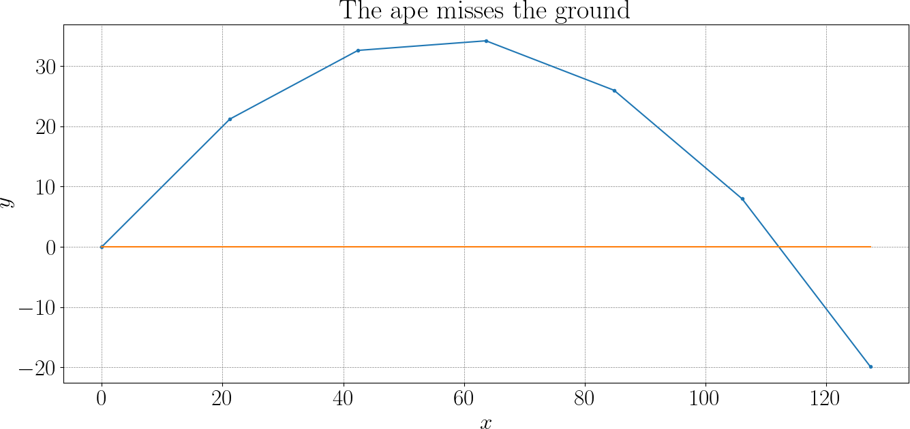
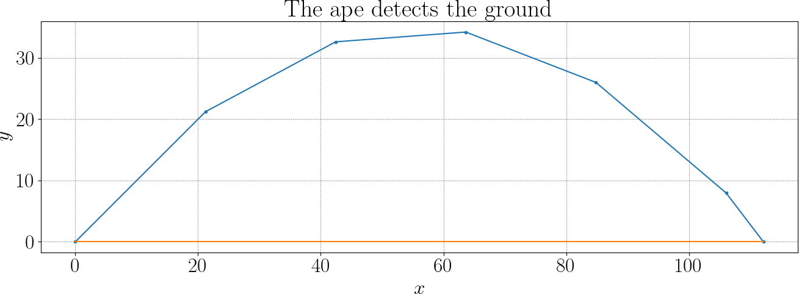

The Ape Misses the Ground
The ape launches a banana and lets the simulation run. Let us see one more time the simulation code:
import numpy as np
g = -9.81 # gravity, m/s^2
speed = 30 # initial speed (m/s)
angle = 45 # launch angle in degrees
x, y = 0, 0 # current state
vx, vy = speed * np.cos(angle * np.pi/180), \
speed * np.sin(angle * np.pi/180)
dt = 1
while y >= 0:
x += dt * vx
y += dt * vy
vy += g * dt
At each second, the ape knows where the banana is: its position, its velocity, its height above the ground. Everything looks reasonable. The trajectory curves downward. Gravity is doing its job. And yet, something strange happens.
One second the banana is still above the ground. The next second, it is already below.

The banana has landed — but the ape did not see it happen. In this simulation, we localized the ground touching event with a simple hack by stopping the simulation as soon as the height becomes negative. In the real world, the banana touches the ground at a precise instant. In the simulation, time advances in jumps, one second at a time. The ape has unknowingly made a strong assumption:
Nothing important happens between two ticks of the clock.
But landing is important. It is not aligned with the time grid. It happens between two steps. The ape did not miss the physics. The ape missed the event. When the banana passes from “above the ground” to “below the ground” in one time step, the ape’s first reaction is simple:
— The simulation is inaccurate.
This is true — but incomplete. The ape is about to learn that not all errors are of the same nature, and that fixing the wrong one leads to confusion. Before worrying about numbers, the ape must ask:
— What exactly am I approximating, and how?
We can decompose this question into few smaller ones.
Representation error — what is a trajectory, numerically?
In our simulation, the trajectory is not a smooth curve.
It is a polyline \((t_0,x_0,y_0) \to (t_1,x_1,y_1) \to \dots\).
Between two time samples, nothing exists — unless the ape decides otherwise. This is a representation choice, not a physical one. This is the representation error: the difference between the true continuous trajectory and its numerical image.
Equation discretization — how do we compute the polyline?
Now comes a different question: "Given the equations of motion, how do we generate those points?" Choosing a time step \(\Delta t\) and using Euler’s method is a discretization of the equations. Smaller \(\Delta t\) generates more points, leading to a finer polyline. Larger \(\Delta t\) prduces fewer points, giving a rougher one. This error exists before we talk about landing, range, or events.
It answers the question: "How faithful is the polyline to the true solution?" This is equation discretization error.
Missing the ground is not a discretization error
Now the crucial realization: the banana misses the ground after the trajectory has already been computed. The ape already has a polyline. The question is no longer "How do I compute the trajectory?", but "Where, on this polyline, does the banana hit the ground?"
This is not an equation discretization problem. It is an event localization problem posed on top of the simulation. Confusing the two leads to unnecessary refinement and wasted computation.
Two different ways to improve the landing estimate
Faced with a missed landing, the ape has two fundamentally different options.
- Option 1: refine \(\Delta t\). This improves the trajectory itself, making the polyline come closer to the true curve.
-
Option 2: interpolate on the existing polyline. This improves where the event is detected. If one point is above ground and the next is below, the ape can assume linear motion between them, and interpolate the zero crossing. This does not change the trajectory, it only improves the estimate of when and where the landing occurs.
Pretty simple to do: if \(y_i>0\) and \(y_{i+1}<0\), then we can find sweep the segment with a parameter \(s\in[0,1]\) by defining \(y_{i+s} := y_i + s (y_{i+1} - y_i)\). Then by solving \(y_{i+s} = 0\), we can find the moment when the segment intersects the ground. Then the intersection point is given as
These two fixes solve different problems. Refining \(\Delta t\) fixes physics approximation, while interpolation fixes event localization. One cannot replace the other. Interpolating a bad trajectory gives a precise answer to the wrong motion. Refining \(\Delta t\) without interpolation still misses events.

Deliverables
- Landing time estimates compared against ground truth
- Range estimates compared against ground truth
- Plot of the trajectory with correct event detection